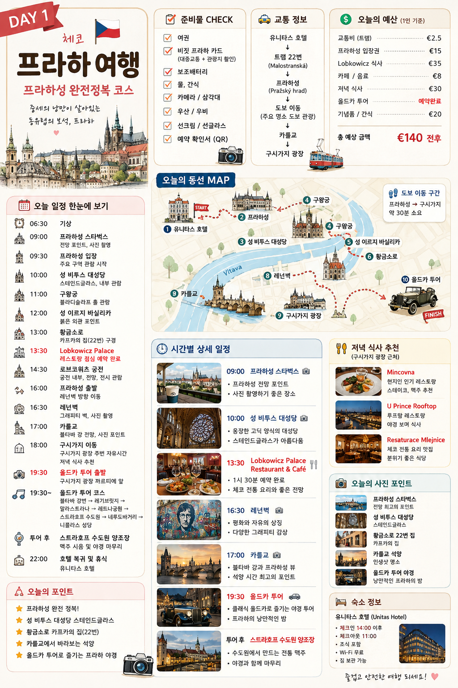
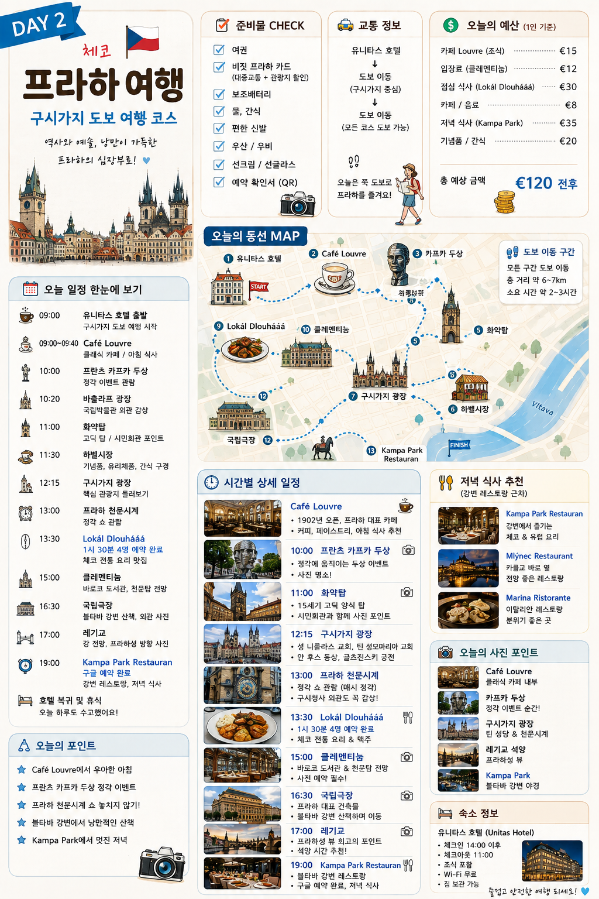
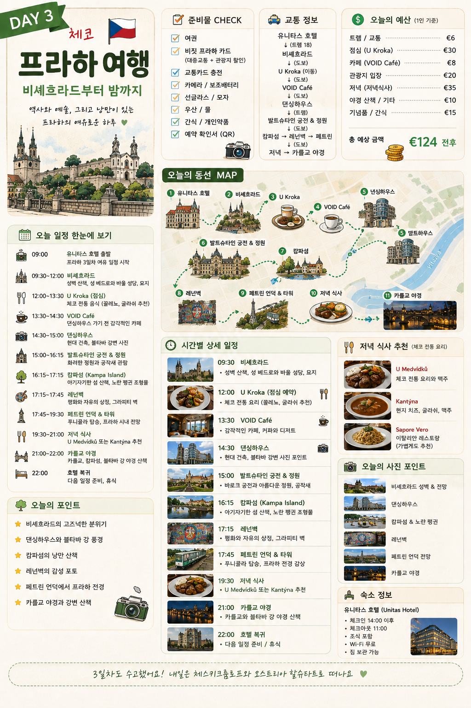
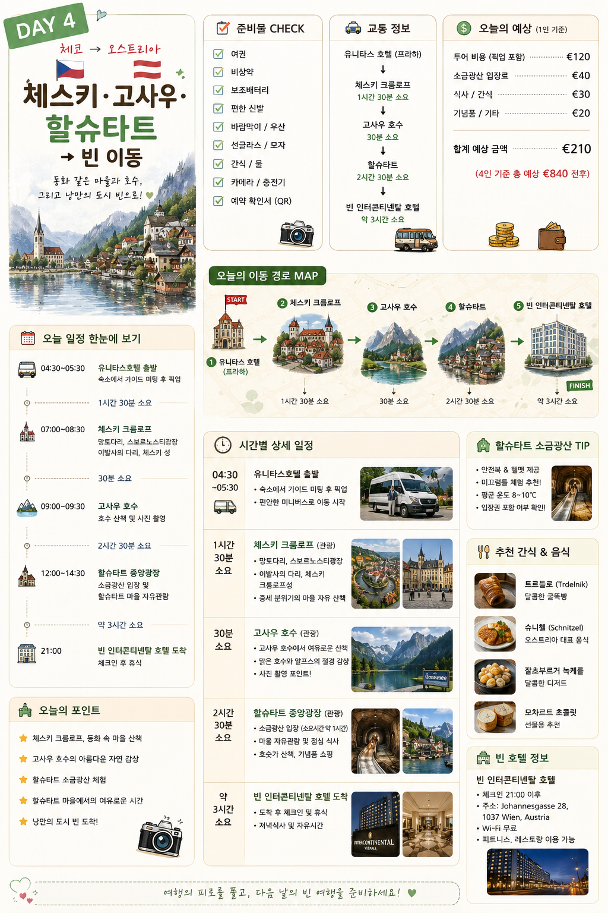
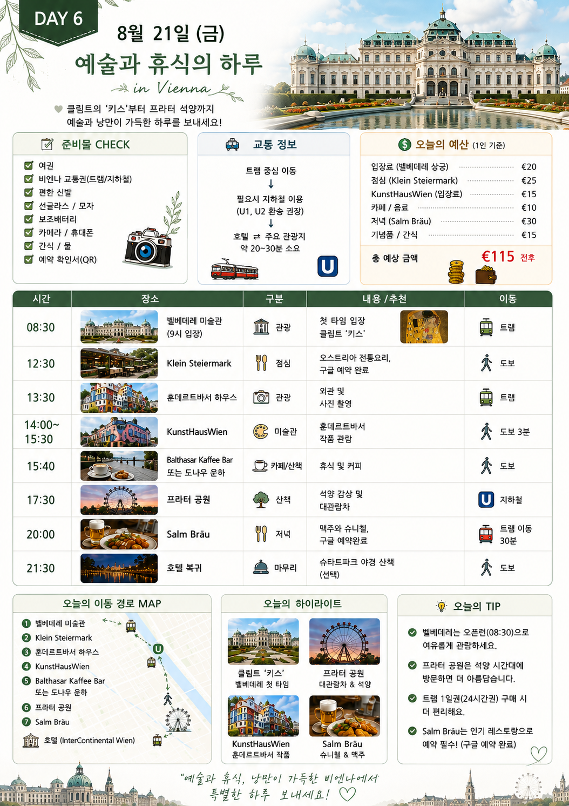
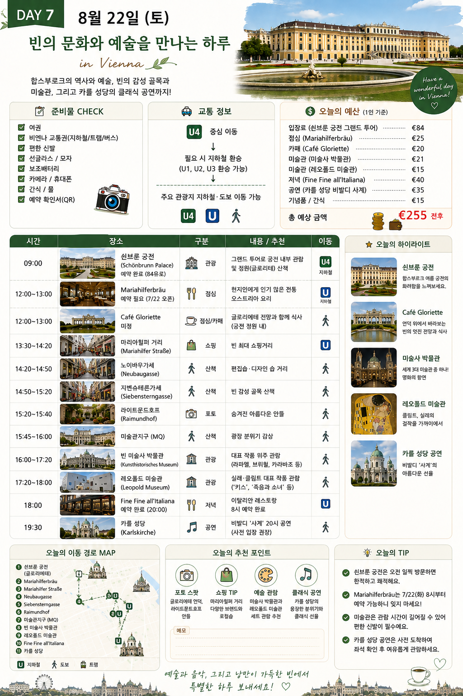

공항 → 호텔 → 시내 적응
- 체크인 및 컨디션 조절
- 링슈트라세 또는 슈테판 대성당 주변 가벼운 산책
- 교통권·렌터카 수령 조건 확인
빈 → 잘츠카머구트 → 체스키 크룸로프 → 프라하 · 2026년 8월 13–21일 초안

기존 이미지에는 8/16–18 프라하 → 8/19 할슈타트 → 8/20–23 빈 순서가 담겨 있었지만, 개인 지도는 반대 방향입니다. 따라서 관광 내용만 아래처럼 옮겼습니다.
| 기존 이미지 | 이 초안의 반영 날짜 | 반영 내용 |
|---|---|---|
| 빈 Day 6 | 8/14 | 벨베데레, KunstHausWien, 프라터 |
| 빈 Day 7 | 8/15 | 쇤브룬, 미술관, 카를 성당 공연 |
| 프라하 Day 1 | 8/19 | 프라하성·말라스트라나·카를교 |
| 프라하 Day 2 | 8/20 | 구시가지 중심 도보 코스 |
| 프라하 Day 3 | 8/21 | 비셰흐라드·댄싱하우스·페트린 |
| 할슈타트 Day 4 | 8/16–17 | 이동일과 할슈타트·고사우 관광일로 분리 |





